Liechtenauer: Uzun Kılıç ve Zırhlı Dövüş Atlası
Kitaptaki tüm el yazması çizimleri, gösterdikleri duruşa, kesişe ya da tekniğe göre ayrıldı. Bir çizime tıklayınca büyür; ok tuşlarıyla aynı kategoride ilerleyebilirsin. Her kategorinin başında kitaptaki Zettel beyitleri ve gloss açıklamalarının Türkçe özeti var. Sayfa numaraları kitabın baskı numaralarıdır.
Kitabın temel öğretileri
Önce ve Sonra (Vor / Nach). Zettel 17–20: “Önce ve Sonra, bu iki şey, tüm sanatın kaynağıdır. Zayıf ve Güçlü; ‘Indes’ sözünü bununla birlikte aklında tut. Böylece sanatla çalışmayı ve korunmayı öğrenirsin. Kolay korkarsan hiç eskrim öğrenme.” Gloss'a göre eskrimin bütün temeli bu üç şeydir: Önce/Sonra, kılıcın Zayıf ve Güçlü kısmı ve ‘Indes’ (o anda, aynı anda).
Sağ elli soldan başlamasın. Zettel 15–16: sağ elliysen ilk vuruşu sol üstten atma. Orası zayıftır ve rakip güçlü bağlanırsa tutamazsın. Sol elli de sağdan başlamamalı.
Beş gizli kesiş. Zettel 21–22: “Sağ elden beş kesiş öğren.” Bunlar Zornhau, Krumphau, Zwerchhau, Schielhau ve Scheitelhau'dur. Gloss: birçok usta bu kesişler hakkında bir şey bilmez; bunları kıran kişi diğer ustalarca övülür.
On yedi başlık. Recital'in içeriği sırasıyla: beş kesiş, dört duruş, dört karşılama (Versetzen), Nachreisen, Überlaufen, Absetzen, Durchwechseln, Zucken, Durchlaufen, Abschneiden, Hende drücken, Hängen ve Winden.
Duruşta bekleme. Üçüncü kaynağın yorumu Liechtenauer'in sözünü aktarır: “Yatan ölüdür, hareket eden hâlâ yaşar.” Duruşlarda uzun kalmak yerine saldırı ve tekniklerle hareket et.
IDuruşlar (Guard / Leger) 17 çizim
Ochs Öküz
Kılıç baş hizasında, kabza başın yanında, uç rakibin yüzüne.
3Zettel 68–69: “Yalnızca dört duruş; onlara sarıl, sıradan olanlardan kaç. Ochs, Pflug, Alber, Vom Tag; sana yabancı olmasın.”
Nasıl durulur. Sol ayak önde, kılıç sağ yanında, kabza başının önünde, başparmak kılıcın altında, uç rakibin yüzüne doğru asılı. Sol Ochs bunun aynasıdır: sağ ayak önde, kılıç sol yanda, kabza yine başın önünde, başparmak altta.
Kökeni. Üçüncü kaynak Ochs'u “omuzdan gelen üst asılı duruş” (Oberhängen) olarak tanımlar. Dört duruşun hepsi üst ve alt asılılardan doğar.
Neyle kırılır. Dört Versetzen'e göre Ochs'u Krumphau kırar. Zwerchhau da Ochs'a, yani üst açıklığa vurulur.
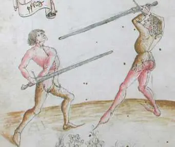
![[59] The first guard is called the ox](../img/liechtenauer/thumbs/002.webp)
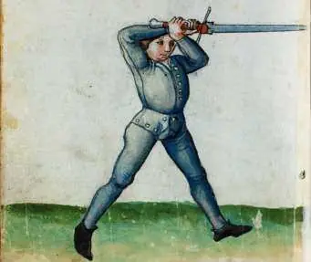
Pflug Saban
Kabza bel/kalça hizasında, uç rakibin göğsüne ya da yüzüne.
3Zettel 96–97 (Hängen): “İki asılı, tek elden ve yerden gelir. Her işte: vuruş, saplama, duruş; yumuşak ya da sert.”
Nasıl durulur. Sol ayak önde, kılıcı çapraz ellerle tut, topuz aşağıda sağ kalçanda, kısa kenar üstte, uç rakibin yüzüne. Sol tarafta sağ ayak önde, topuz sol kalçada, uzun kenar üstte.
Alt asılılarla bağı. Hängen bölümüne göre “yerden iki asılı”, iki yandaki Pflug'dur. Bu duruştan çalışırken bağlanmada rakibin yumuşak mı sert mi olduğunu hissetmen (Fühlen) gerekir.
Neyle kırılır. Pflug'u Schielhau kırar. Absetzen de çoğunlukla Pflug'dan yapılır: sol yanına açıklık ver, saplarsa kısa kenarla kılıcına sar ve aynı anda sapla.
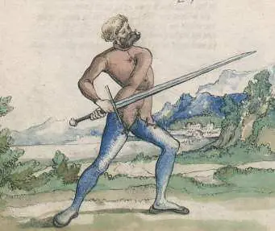
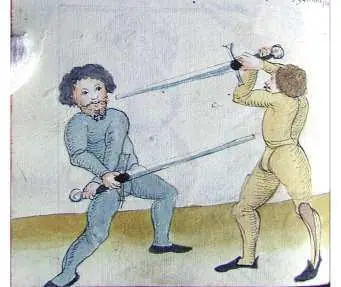
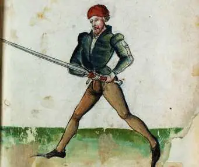
Alber Ahmak
Kollar uzanmış, uç yere doğru indirilmiş davetkâr duruş.
3Üçüncü kaynak: “Alber, vurulanı ve saplananı kırar. Asılılarla da savuruşları kır; ardından hemen Nachreisen gelmeli.”
Nasıl durulur. Sağ ayak önde, kollar uzanmış, kılıcın ucu önünde yere doğru.
Neyle kırılır. Alber'i Scheitelhau (tepe kesişi) kırar.
Alber'den çalışma. Abschneiden bölümüne göre Alber'de beklerken rakip kılıcını seninkinin üstüne düşürürse altta kal ve kısa kenarla güçlü kaldır. Sert bastırırsa bıçağının altından sıyırıp diğer taraftan ağzına vur.
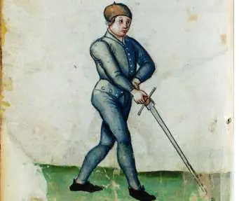
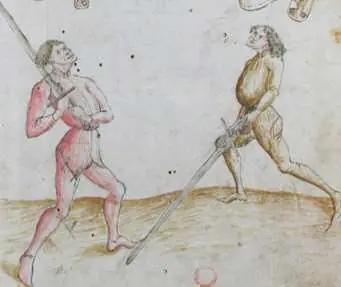
![[61] The third guard is called the fool](../img/liechtenauer/thumbs/009.webp)
Vom Tag Çatıdan
Kılıç omuzda ya da başın üstünde, yukarıdan vuruşa hazır.
3Zettel 49: “Zwerch, Vom Tag'dan geleni alır.”
Nasıl durulur. Sol ayak önde, kılıç sağ omuzda ya da kollar uzanmış hâlde başının üstünde yüksekte tutulur.
Langort ile ilişkisi. Üçüncü kaynak şunu söyler: “Dördüncü duruş Vom Tag aynı zamanda uzun uçtur. Kolları uzatarak kullanan, vuruş ve saplamalarla vurulamaz.”
Neyle kırılır. Vom Tag'ı ve yukarıdan inen tüm vuruşları Zwerchhau kırar. Nachreisen için de iyi bir çıkış noktasıdır: Vom Tag'da dur ve rakibin vuruşu kaldırmasını izle.
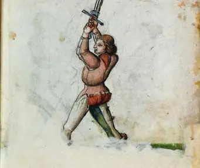
![[91] The fourth guard: From the Day](../img/liechtenauer/thumbs/011.webp)
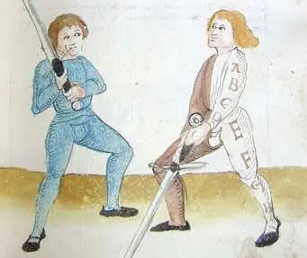
Schrankhut Bariyer duruşu
Kılıç çaprazlama yere doğru, yandan savunma duruşu.
1Gloss: “Krumphau'yu Schrankhut'tan da iki tarafa yapabilirsin.”
Nasıl durulur. Sol ayak önde, kılıç sağ yanında, uç yerde, uzun kenar üstte. Böylece sol yanına bir açıklık verirsin. Sol tarafta sağ ayak önde, kılıç sol yanında çapraz ellerle tutulur ve kısa kenar üstte olur.
Nasıl kullanılır. Rakip açıklığa vurursa sağ ayakla sağa geniş sıçra ve çapraz ellerle uzun kenarla ellerine vur, uç ellerinin üstüne gelsin. Sol taraftan kısa kenarla ellerinin üstüne vurursun.
Üçüncü kaynak. Schrankhut uçtan gelir: uç hangi yana istersen yere konur ve böylece Absetzen'e hazırlanırsın. Önündeki uçla yapıldığında “kapı”dan (Pforte) da yapılır. Biri vurur ya da saplarsa Absetzen ile yukarı çıkarken ucunu yakala ve ayaklarına ya da en iyi isabet eden yere vur.
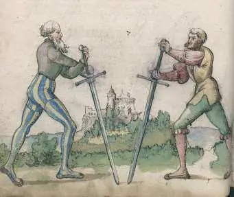
Halbschwert duruşları Zırhlı yarım kılıç duruşları
Kısa kılıç (zırhlı dövüş) bölümündeki dört duruş: 1., 2., 3. ve 4. duruş.
4Zırhlı dövüşte (Kampffechten) kılıç kısaltılarak tutulur: sağ el kabzada, sol el bıçağın ortasında.
1. duruş (yüksek). Sol ayak önde, kılıç sağ yanında başının üstünde, uç rakibin yüzüne asılı. Rakip alçak duruştan alttan saplarsa karşılama, yüzüne sapla; Kampffechten'e göre tüm yüksek saldırılar alçak olanları yener.
2. duruş (alçak). Sol ayak önde, kılıç sağ yanında aşağıda, topuz sağ dizine dayalı, uç rakibin yüzüne ya da göğsüne.
3. duruş. Sol ayak önde, kılıç sol dizinin üstünden çaprazlama tutulur. Bu duruştan rakibin oyunları karşılayarak kırılır.
4. duruş. Kabza sağ koltuk altında, balçak göğse dayalı, uç rakibe. Bu duruşa diğer duruşlardan saldırarak gelinir: saplama zırhın açıklığına girince kabzayı hemen göğsüne dayayıp rakibi önünden it, uçtan kurtulmasına izin verme.
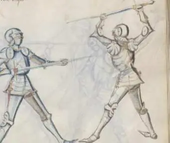
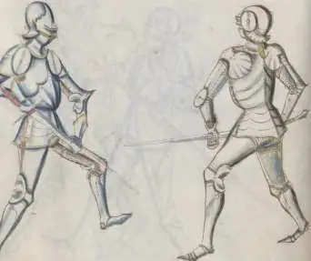
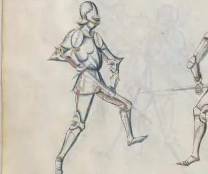
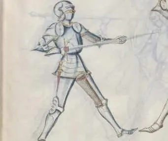
IIUsta kesişleri (Meisterhäue) 37 çizim
Zornhau Öfke kesişi
Omuzdan atılan güçlü Oberhau; Liechtenauer'in ilk usta kesişi.
8Zettel 27–29: “Sana yukarıdan kim vurursa, Zornhau'nun ucu onu tehdit eder. Fark ederse, tehlikesizce üstten al. Karşısında daha güçlü ol, sar, sapla. Görürse, aşağı al.”
Ne? Omuzdan atılan bir Oberhau'dur. Gloss onu “basit bir köylü vuruşu” diye anar, ama yukarıdan gelen tüm vuruşları uçla kırar. Üçüncü kaynağa göre öfkelenen birine hiçbir vuruş Zornhau kadar hazır gelmez.
Nasıl yapılır. Rakip sağdan başına vurursa sen de sağdan, karşılamadan, öfkeyle onun kılıcına vur. Bağlanmada yumuşaksa (weich) uzun ucu dümdüz yüzüne ya da göğsüne sal.
Abnehmen. Ucu fark edip güçlü karşılarsa ve kılıcını kenara iterse kılıcını onun bıçağından üstten çek, diğer taraftan başına vur.
Winden. Bağlanmada güçlü kalırsa sen de güçlü kal. Kollarını kaldırıp sar ve ucu yüzüne sapla. Bunu da görürse aşağı açıklığa geç.
Karşılıkları. Rakip Abnehmen yaparsa üstten uzun kenarla güçlü bağlan ve başına git. Ya da kısa kenarla kılıcına biraz sarıp uzun kenarla başına vur, ya da vuruştan yana çıkıp en yakın açıklığa çalış.
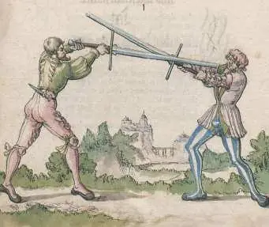
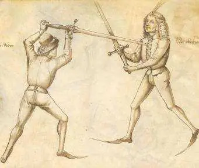
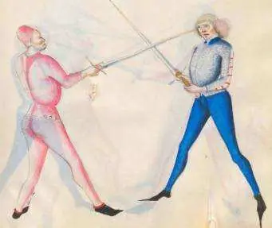
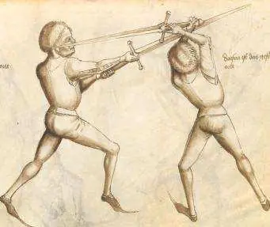
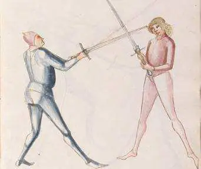
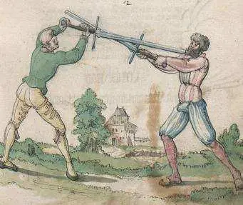
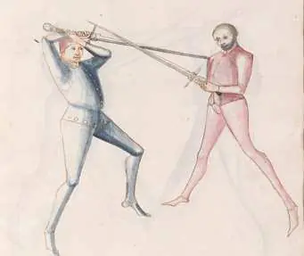
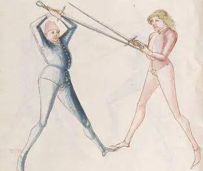
Krumphau Eğri kesiş
Çapraz adımla ellere/kılıca inen eğri kesiş; Ochs'u kırar.
5Zettel 42–45: “Çevikçe eğri vur, ucu ellere at. Krump'u adımla iyi koyan çok vuruşu bozar. Ustaları zayıflatmak istersen düzlerine eğri vur. Yukarıda çaktığında kenara çekil; bunu övüyorum.”
Ne? Yana iyi bir adımla eğri atılan bir Oberhau'dur. Dört Versetzen'den biridir: Ochs'u ve ayrıca Oberhau ile Unterhau'yu kırar.
Nasıl yapılır. Rakip sol tarafında Ochs'ta durursa sol ayağını öne al, kılıcı sağ omzunda tut. Sağ ayakla sağına geniş sıçra ve çapraz kollarla uzun kenarla ellerinin üstüne vur, ucu kabzasının üstünden ellerine at.
Yana alma. Sağdan yukarıdan açıklığına keserse sağ ayakla sol yanına adım at, kılıcını onunkinin üstüne koy, ucun yerde Schrankhut'ta kalsın. Bu iki tarafa da yapılır ve buradan başına vurulabilir.
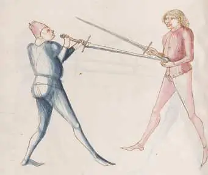
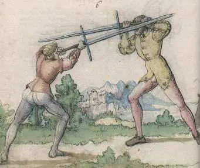
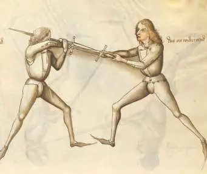
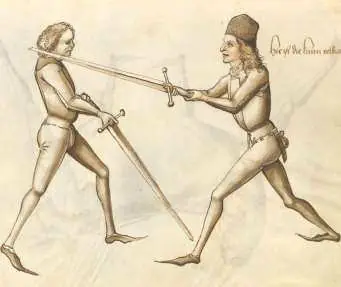
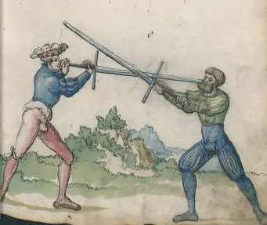
Zwerchhau Çapraz (yatay) kesiş
Kabza başın üstünde, yatay gelen kesiş; Vom Tag'ı kırar. Karşılık (Bruch) çizimleri de dahil.
13Zettel 49–52: “Zwerch, Vom Tag'dan geleni alır. Güçlüyle zwerch'le, işini bununla yap. Pflug'a zwerch, Ochs'a sert bağla. İyi zwerch'lediğinde sıçrayışla başına zarar verirsin.”
Ne? Üçüncü kaynağa göre kılıçla yapılan hiçbir vuruş Zwerchhau kadar adil, güçlü ve iyi değildir. Her iki kenarla, iki taraftan, yukarı ve aşağı tüm açıklıklara vurulur. Vom Tag'dan ve yukarıdan gelen her şeyi savar.
Nasıl yapılır. Sol ayak önde, kılıç sağ omuzda. Rakip yukarıdan vurmakla tehdit ederse önce davran: sağ ayakla sağa iyi sıçra. Sıçrarken kılıcı kabza başının önünde olacak şekilde çevir, başparmağın alta gelsin, kısa kenarla sol başına vur. Böylece onun kesişini kabzanda yakalar ve aynı anda başına vurursun.
Dört açıklığa. Pflug alt açıklıklar, Ochs üst açıklıklar demektir. Zwerch ile dört açıklığın hepsine çalışılır.
Yorum. Hayatı için dövüşen biri ilk vuruşu (Vorschlag) iyi bir Zwerchhau ile almalıdır: ulaşabileceği an sağ üstten arka kenarla doğrudan başa, ucu bir kayış gibi rakibin kılıcının etrafına dolayarak.
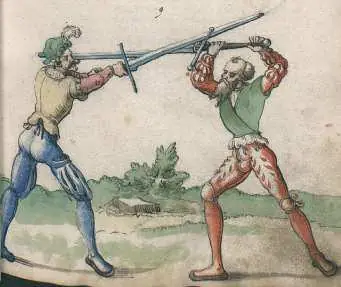
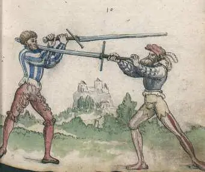
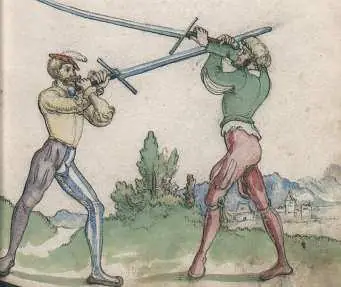
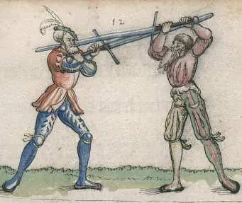
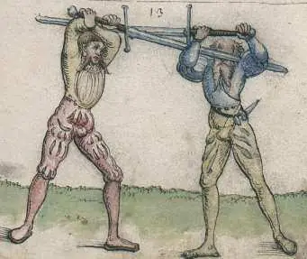
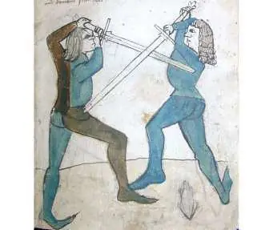
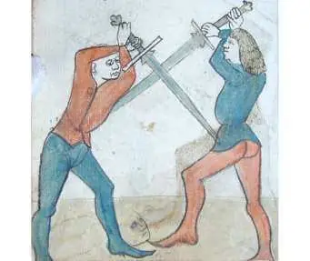
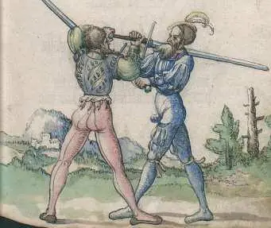
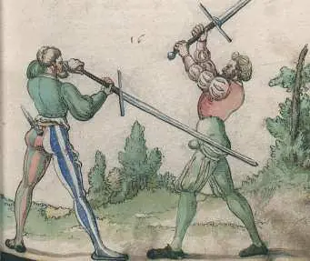
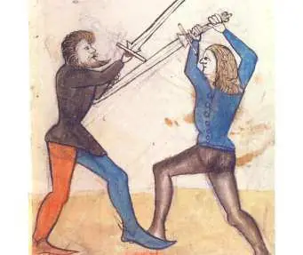
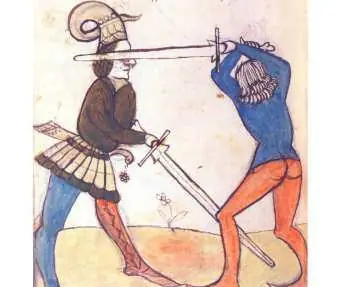
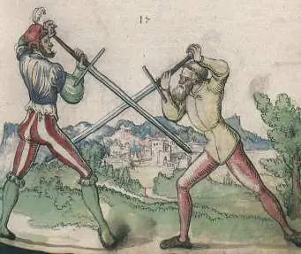
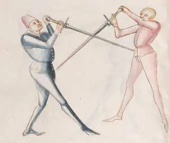
Schielhau Şaşı kesiş
Uzun kenarın sırtıyla atılan kesiş; Pflug'u ve Langort'u kırar.
8Zettel 58–62: “Schieler, Büffel'in (kaba güçle dövüşenin) vurduğunu ya da sapladığını kırar. Değiştirmekle tehdit edeni Schieler soyar. Kısa kalırsa şaşı bak, Durchwechseln onu yener. Uca şaşı vur, boğazı korkusuzca al. Üst başa şaşı vur, ellere zarar vermek istersen.”
Ne? Sağ üstten kılıcın arka (kısa) kenarıyla atılan bir vuruş. Şaşı biri gibi sola bakarken sağa adım atılır, kılıç ve el ters çevrilir. Pflug'u ve Langort'u kırar. Gloss'a göre birçok usta bu vuruştan habersizdir.
Nasıl yapılır. Sol ayak önde, kılıç sağ omuzda. Başına yukarıdan vurursa kılıcı çevir ve onun vuruşuna karşı kısa kenarla, kollar uzanmış hâlde, kılıcının üstünden başına uzun vur. Böylece karşılama ve vuruş tek harekettir.
Pflug'a karşı. Rakip Pflug'da durup alttan saplamak isterse uzun bir Schielhau ile içeri gir ve ucu uzun göğsüne sal; alttan sana ulaşamaz.
Durchwechseln'e karşı. Rakip altından geçmeye kalkarsa ucu uzun önüne bırak, geçemesin.
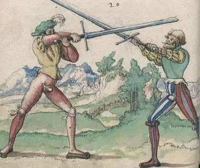
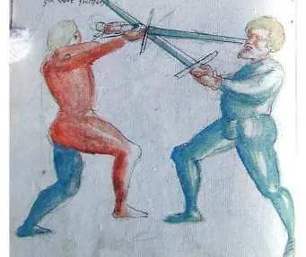
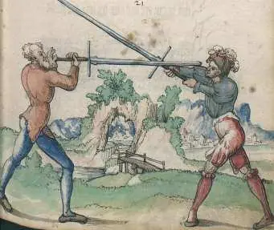
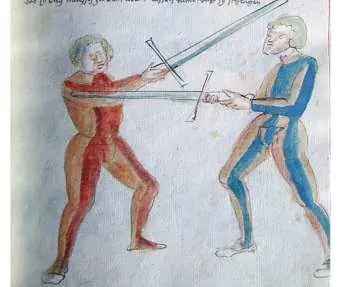
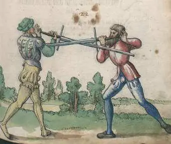
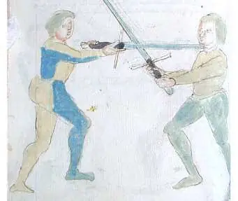
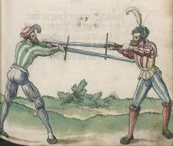
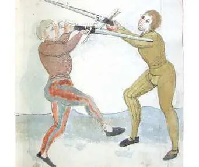
Scheitelhau Tepe kesişi
Tepeden dikey kesiş; Alber'i kırar. Krone (taç) ve kesik karşılıkları dahil.
3Zettel 63–67: “Scheitler yüze tehlikelidir; dönüşüyle göğse de. Ondan geleni Krone alır. Krone'yi kesikle kes, böylece sertçe kırarsın. Vuruşa bastır, kesiklerle çekil.”
Ne? Tepeden dikey kesiş. Alber'i kırar ve dönüşüyle yüze ve göğse çok tehlikelidir.
Nasıl yapılır. Rakip Alber'deyse sol ayak önde, kılıç sağ omuzda dur, ona doğru sıçra ve uzun kenarla yukarıdan güçlü vur. Kolların yüksek kalsın. Karşılarsa ucu kabzasının üstünden yüzüne as.
Dönüş. Ucunu kabzasıyla yukarı iterse kılıcını kabza başının önüne gelecek şekilde çevir, başparmak altta olsun, ucu ellerinin altından göğsüne koy.
Krone ve kırılışı. Rakip kabza ve uç başının üstünde olacak şekilde karşılarsa buna Krone denir; bununla içeri koşar. Karşılık olarak kılıcını Krone'nin altından kollarına kesikle sar ve bastır, sonra kesikle geri çekil.
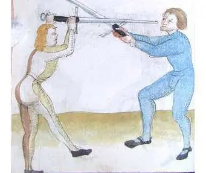
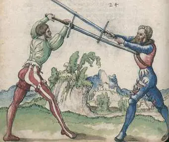
IIITaktik ve teknikler 41 çizim
Vier Blößen Dört açıklık
Hedef alınacak dört bölge.
2Zettel 36–37: “Dört açıklığı bil; onları hedef al, bilerek isabet edersin. Her işte, onun ne yaptığına aldırmadan.”
Ne? Tepeden kasığa dikey bir çizgi ve kemer hizasında yatay bir çizgi düşün. Sağ ve sol üst ile sağ ve sol alt olmak üzere dört açıklık çıkar. Her birinin kendi tekniği vardır; teknikler kılıca değil hep açıklığa gider.
Nasıl aranır. İki yolu var: ön dövüşte (Zufechten) Nachreisen ve uzun ucu salarak; bağlanmada ise sekiz Winden ile.
Neden önemli. Korkmadan, vuruş ya da saplamayla açıklığa git; böylece rakip karşılamak zorunda kalır. Karşıladığı anda Winden ile yine en yakın açıklığı ara. Kılıca dövüşme, açıklığa dövüş.
Duplieren & Mutieren İkileme ve dönüştürme
Bağlanmadan (Bind) sonra kılıcın arkasından vurma ya da ucu çevirip saplama.
5Zettel 38–41: “Dört açıklığı ustaca kırmak istersen: üstte Duplieren, altta doğru Mutieren yap. Sana doğrusunu söylüyorum: kimse kendini tehlikesizce koruyamaz. Bunu anladıysan, rakip vuruşa pek gelemez.”
Duplieren. Sağdan yukarıdan vur. Rakip karşılayıp kılıçta güçlü kalırsa o anda kollarını kaldır, sol elinle topuzu sağ kolunun altından geçir ve çapraz kollarla uzun kenarla onun bıçağının arkasından başına vur. Soldan bağlanmada aynı şeyi kısa kenarla yaparsın.
Mutieren. Karşılar ama kılıçta yumuşaksa kısa kenarla kılıcına sol tarafa sar, kollarını iyice kaldır, bıçağını onun kılıcının üstünden aşırıp alt açıklığa sapla.
Kural. Rakibin güçlüsüne karşı üst açıklığa Duplieren, yumuşaksa alt açıklığa Mutieren. Gloss: bu ikisi tüm kesişlerden, kılıçta zayıfı ve güçlüyü buldukça yapılır.
Fehler & Verkehrer Aldatma ve çevirici
Sahte saldırılar (Fehler) ile dirsek tutup atma içeren Verkehrer oyunları.
7Zettel 53–57: “Fehler yanıltır; alttan dilediğin gibi vur. Verkehrer zorlar; Durchlaufen ile, güreşle de. Dirseği bilerek al, teraziye sıçra. İki kez aldat; biri isabet ederse kesikle devam et. Daha da ikile; sola gir ve tembel olma.”
Fehler. Karşılamayı seven ve kılıca (bedene değil) dövüşenlere karşı. Serbest bir Oberhau ile başına vuracakmış gibi yap, vuruşu çek ve Zwerch ile sol ya da sağ alt açıklığa vur. Kabzanla başının üstünü koru.
Çifte Fehler. İlk aldatmayı bir tarafa göster, ikinciyi diğer tarafa, isabet edeni kesikle bitir.
Verkehrer. Eskrimciler buna “yarım vuruş” ya da “çevrik vuruş” der. Ters çevrilmiş uzun kenarla sağdan yukarı ve aşağı yarım vuruşlar atarak yaklaş. Kılıcına bağlandığında ucu üstten yüzüne as. Saplamayı karşılayıp kollarını yukarı kaldırırsa altından geç (Durchlaufen), dirseğini kavra ve güreşle at.
Vier Versetzen Dört karşılama
Savuşturulduğunda ne yapılacağı; kabza ile kilitleme, yarım kılıç.
8Zettel 70–73: “Dört Versetzen vardır, duruşları da ağır yaralar. Karşılamaktan sakın; olursa seni çok sıkıştırır. Karşılanırsan, nasıl olursa olsun, öğrettiğimi dinle: sıyırıp çek, çabuk vur.”
Dört Versetzen = dört kesiş. Krumphau Ochs'u, Zwerchhau Vom Tag'ı, Schielhau Pflug'u, Scheitelhau Alber'i kırar.
Sıradan karşılamaktan sakın. Sıradan eskrimciler ucu yukarıya ya da yana tutarak karşılar; ucu açıklıkta tutmayı bilmedikleri için sık vurulurlar. Karşılayacaksan vuruşla ya da saplamayla karşıla ve aynı anda (Indes) ucu en yakın açıklığa yönelt. “O vurursa sen de vur, saplarsa sen de sapla.”
Karşılandığında. Çizimlerdeki karşı oyunlar: topuzu rakibin öndeki elinin üstünden geçirip bileğini çekmek, kılıcını yere bastırıp yarım kılıçla yüzüne saplamak. Rakip kılıcına düşerse topuzu onun kılıcının üstünden geçirip başına vurmak (Schnappen).
Ansetzen. Zettel 74: “Dört uca saldır; bitirmek istersen orada kalmayı öğren.” Ochs ya da Pflug'da dur. Rakip vurmak için kaldırırken ya da saplamak için çekerken önce davran, uzun ucu en yakın açıklığa sal.
Nachreisen & Überlaufen Takip ve üstten aşma
Rakibin hareketinin ardından hemen girmek; alçak hedef alana üstten vurmak.
7Zettel 75–82: “Nachreisen'i öğren, iki türlü, ya da silaha kesikle. İki dış alış; işine başla. Saldırıları yumuşak mı sert mi sına. Fühlen'i öğren; Indes keskin keser. Çifte Nachreisen; biri isabet ederse eski kesiği yap. Alttan hedef alanı üstten aş; utanır. Yukarıda çaktığında güçlen, bunu överim.”
Nachreisen. Rakip vurmak için kılıcını kaldırırken, kesişi inmeden önce vuruş, kesik ya da saplamayla üst açıklığına git. Ya da uzun kenarla koluna düş ve onu kendinden it. Saplamak için kılıcını çektiği an da peşinden git ve saplamasını bitirmeden onu sapla.
Dış alışlar ve Fühlen. Bağlanmada rakibin yumuşak mı sert mi olduğunu hisset. Indes sözü burada keskindir: hissettiğin an davran.
Überlaufen. Alt açıklığına vurana karşılık verme, yukarıdan güçlüce başına vur ya da uzun ucu yüzüne ya da göğsüne koy. Gloss: tüm üst saldırılar alttakileri kırar. Yukarıda bağlanırsa uzun kenarla güçlü kal ve en yakın açıklığa çalış.
Absetzen Saptırma
Gelen kesiş ve saplamaları uçla saptırıp aynı anda saplamak.
4Zettel 83–85: “Absetzen'i öğren; vuruşları ve saplamaları ustaca boz. Sana kim saplarsa, senin ucun isabet eder, onunki kırılır. İki taraftan, adım atacaksan her seferinde vur.”
Nasıl yapılır. Rakip saplayacakmış gibi duruyorsa sol ayak önde, sağ tarafta Pflug'da dur ve sol yanına açıklık ver. O açıklığa saplarsa kısa kenarla kılıcına sar ve kılıcın sol yanında kalsın. Böylece saplamayı saptırırsın. Aynı anda sağ ayakla adım atıp yüzüne ya da göğsüne sapla.
Yukarıdan gelen vuruşa. Sağ Pflug'da dururken sol başına vurursa kılıcı kaldır, kabza başının önünde olacak şekilde vuruşuna karşı sar, sağ ayakla adım at ve yüzüne ya da göğsüne sapla. Bu iki taraftan da yapılır.
Özü. Karşılama ve saldırı tek harekettir: onun ucu saparken seninki isabet eder.
Durchwechseln & Zucken İçinden geçiş ve geri çekme
Bağlanmadan ucu alttan geçirmek ya da kılıcı çekip yeniden vurmak.
4Zettel 86–90: “Durchwechseln'i iki taraftan öğren, saplamalarla sert. Sana kim bağlanırsa Durchwechseln onu çabuk bulur. Bağlanmada yakın adım at; Zucken iyi fırsat verir. Çek; isabet ederse daha çek. Ustaları aldatmak istersen tüm isabetlerde çek.”
Durchwechseln. Kolay karşılayan ve kılıca vuran eskrimcilere karşı. Yukarıdan güçlü vur. Rakip senin kılıcına vurursa, bağlanmadan önce ucu onun kılıcının altından geçir ve diğer taraftan göğsüne sapla. Saplamayı görüp karşılarsa yine geç. Bunu dikkatle yap ki geçerken sana uç koyamasın.
Zucken. Sert bağlanıp hareketsiz bekleyen, senin çekilmeni kollayan ustalara karşı. Sağdan başına güçlü vur. Karşılamak için kılıcını öne sürerse, bağlanmadan önce kılıcını kendine çek ve diğer taraftan sapla. Bağlanırsa yakın adım at, kılıcını üstten çek ve diğer taraftan başına vur. Yine karşılarsa Duplieren ya da başka oyunlarla üst açıklıklara devam et.
Abschneiden Kesip alma
Ellere ve kollara kesik (Schnitt).
3Zettel 93–95: “Sertleri alttan, iki yönde kes. Dört kesik vardır: ikisi alttan, ikisi üstten. Kenarını çevir; kurtulmak için elleri bastır.”
Abschneiden. Unterhau ile gelirken ya da Alber'de beklerken rakip kılıcını seninkinin üstüne düşürürse altta kal ve kısa kenarla güçlü kaldır. Sertçe bastırırsa bıçağının altından sıyrıl ve diğer taraftan ağzına vur.
Schnappen. Kabzanın yakınına düşüp ucu sağına giderse topuzu çabucak kılıcının üstünden geçir ve uzun kenarla başına vur. Ucu soluna giderse kısa kenarla vur.
Dört kesik. İki üst kesik, karşılamadan Zwerch ile öbür tarafa dönenlere karşıdır: iki kolunun üstüne uzun kenarla düşüp bastır. İki alt kesik, kollarını kaldırıp içeri koşanların (Einlaufen) kollarınadır.
Hende drücken. Alt kesikten üst kesiğe geçmek. İçeri koşanın koluna, topuzunun altından uzun kenarla düş ve yukarı bastır. Sağına adım atarken topuzu alttan geçir, kılıcı kolundan ayırmadan uzun kenarla kollarının üstüne çevir ve kendinden it.
Hängen / Sprechfenster Asılı duruş ve konuşan pencere
Bağlanmada kalıp rakibi okumak.
1Zettel 96–99: “İki asılı tek elden, yerden gelir. Her işte: vuruş, saplama, duruş; yumuşak ya da sert. Sprechfenster yap; serbestçe dur, ne yaptığını araştır. Öyle vur ki sıçrasın; senden önce çekilenden…”
Hängen. Yerden iki asılı, iki yandaki Pflug'dur. Alttan bağlandığında topuzunu yere doğru as ve asılıdan yüzüne sapla. Ucunu yukarı iterse kılıçta kal, onunla yukarı çık ve ucu yukarıdan yüzüne as. Asılılarda vuruş, saplama ve kesiği hızla uygula; bağlanmada yumuşak mı sert mi olduğunu yokla. Dört Winden ve her birinden bir vuruş, saplama, kesik buradan yapılır.
Sprechfenster. “Konuşan pencere”: uzun uçla bağlanmada kal, serbestçe dur ve rakibin ne yapacağını oku. Kılıçtan çekilirse vurursun; kimse kendini tehlikesizce koruyamaz.
IVGüreş ve kılıç alma 10 çizim
Durchlaufen & Ringen am Schwert Altından geçme ve kılıçlı güreş
Yakın mesafede kol kilitleri, atışlar ve kalçadan savurma.
8Zettel 91–92: “İçinden koş, topuzla asılı bırak; güreşmek istersen kavra. Sana karşı güçlü olanı Durchlaufen ile işaretle.”
İki türü vardır. Beden güreşi ve kol güreşi. İçeri koşmayı seven eskrimcilere karşı kullanılır.
Beden güreşi. Rakip kollarını yukarı kaldırıp güçle yukarıdan bastırırsa sen de kollarını kaldır. Kılıcını sol elinle topuzdan başının üstünde tut, bıçak sırtına doğru sarksın. Başınla sağ kolunun altından geç, sağ ayakla sağ ayağının arkasına sıçra. Sağ kolunu belinin önünden dola, sağ kalçana al ve önüne at.
Kol güreşi. Kılıcını bırak, sağ elini ters çevirip sağ elini dışarıdan kavra, sol elinle sağ dirseğini tut. Sol ayakla sağ ayağının önüne sıçra ve kolunu kaldır. Kolu kırabilir ya da bacağının üstünden atabilirsin.
Schwertnehmen Kılıç alma
Rakibin kılıcını elinden almak.
2Durchlaufen bölümünün kılıç alma oyunları.
İçeri koşan rakibe. Sol elini ters çevir, sağ kolunun üstünden geç ve kılıcını iki elinin arasından kabzadan kavra. Sol yanına bastır; kılıcı ondan alırsın.
Bağlanmada. Karşılar ya da kılıcına bağlanırsa iki kılıcı ortadan, bıçaklardan sol elinle kavra ve sıkı tut. Sağ elinle topuzu alttan iki elinin önünden geçir, sağına yukarı bastır. İki kılıç sende kalır.
VZırhlı dövüş (Kampffechten) 33 çizim
Atlı ve mızrak oyunları Ross / Spieß
Attan inmiş savaşçının atlıya karşı mızrakla oyunları.
7Kampffechten girişi: “Burada atlı ve yaya ciddi dövüş başlar; Liechtenauer'in zırhlı eskrimi.”
Attan indin, o inmedi. Sol ayak önde, mızrağını sağ yanında yere dik tut, ucu ona dönük. Hangi taraftan gelirse o tarafa dön ve mızrağınla onunkini saptır.
Kılıçla gelen atlıya. Yayayken atlı kılıçla üzerine gelirse mızrakla açıklıklarına sapla ve bekle.
Atı devirmek. Mızrağı en uzak ucundan, ucu yere doğru önünde tut. At yaklaşınca mızrağı ön bacaklarının arasına sok, yana sıçra ve atı devirmeyi dene.
Mızrağa karşı kılıç Spieß gegen Schwert
Kılıçla mızrağı saptırma, sol elle karşılama.
3Zettel: “Sol elden uzun vur, akıllıca sıçra ve bak, zarardan kaçınmak istiyor mu; vur ki açıklıkları kılıcın ucuyla taciz edilsin.”
Kılıç sende, mızrak onda. Mızrağı kısa tutup alçak duruşta durursa sen de alçak duruşta dur. Alttan saplarsa saplamayı kılıçla, sol elin önde olacak şekilde saptır. Topuzu sağ omzunun üstünden boynuna geçir, sağ ayakla sol ayağının arkasına sıçra ve topuzla sağ dizinin üstünden çek.
Sol elle karşılama. Mızrağı sol elle yana iterek gir ve kılıcın ucunu açıklıklarına yönelt.
Zırhlı güreş ve yere bastırma Kampfringen / Unterhalten
Zırhta güreş, yere düşürme, bastırma ve kol kırma; hançerle bitiriş.
6Zettel: “Güreşeceksen bacağın arkasına sıçramayı doğru öğren; atmadan önce tuzak kur, ön bacağı ustaca kilitle.”
Temel. Her şeyden önce onun öndeki ayağının arkasına doğru sıçramayı ve o ayağı kilitlemeyi bil.
Atış. Güreşe girince bir ayağı önde mi diye bak. Adım atması için onu kendine çek ya da it. Sol ayakla öne gelirse sağ ayakla sol ayağının arkasına sıçra ve sağ diz kapağınla sol diz arkasına vur.
Mordstoß. Kollarından kavradığında ayağını düz uzatıp sağlam durursa o dizine tekme at ve bacağını kır. Tekme attığın ayağı yakalamasına izin verme.
Bastırma ve kol kırma. Yüzüstü düşerse sırtına otur, bir kolunu sırtına bük ve tek elle tut; kalkamaz. Diğer elle dirseğini yukarı kaldırırsan kol kırılır. Sırtüstü düşerse gövdenle yüzüne düş, boynunu kolunun altına kıstır ve kendine yardım etmek için uzattığı kolu diğer elinle çek; böylece hançerle çalışamaz.
![[35] A hold down and an arm break](../img/liechtenauer/thumbs/118.webp)
![[37] Yet a hold down](../img/liechtenauer/thumbs/119.webp)
Yarım kılıç oyunları Halbschwert-Stücke
Kılıcın ortasından tutularak yapılan saplamalar, karşılıklar, kılıç alma ve kurtulmalar.
16Zırhlı dövüşün yarım kılıç oyunları: saplamalar zırhın açıklıklarına (eldiven, koltuk altı, yüz) gider.
Yüksek duruştan. Rakip alçaktan alttan saplarsa yukarıdan, onun kılıcı ile öndeki elinin arasına sapla. Topuzu yere bastır, ucunu kılıcının altından geçirip sağ yanına koy. Yüzüne saplarsan ve savuşturursa Zucken ya da Durchwechseln ile diğer tarafa geç.
Alçak duruştan. Yüksekten yüzüne saplarsa öndeki elinin eldiven açıklığına ya da sol omzunun altına sapla.
Üçüncü duruştan. Yüzüne saplamayı sol elinin önünde kılıçla sağına saptır ve yüksek duruşa çık. Ya da saplamayı iki elinin arasında karşıla, topuzu öndeki elinin üstünden geçirip aşağı çek.
Kolu sapla, kurtulmalar, kılıç alma. Kılıcı ortadan tuttuğu kolunu eldivenin dışından sapla, saplama tutunca halkaya doğru yürü; yanını kazanırsın. Sağ omzuna saldırıp sen de onunkine saldırdıysan sol ayakla geri adım at, sol yanını çevir, ucunu kaldır; onunki boşa gider. Alçak duruştan güçlü saplarken aynı anda saplarsa sol elini ters çevirip kılıcını ortadan kavra, topuzu altından geçir ve kılıcını al.
Topuzla vuruş Mordschlag / Knopf
Kılıcı tersten tutup topuz (pommel) ve balçakla vurmak.
1Zettel: “Vuruşla ön ayağı koru.”
Topuzla vuruş. Topuzla rakibin öne uzattığı uzuvlara vurulur. Kılıcını yüksek duruşta başının üstünde tut ve yüzüne saplayacakmış gibi yap. Sağ elinle kılıcı sür, sol elini yardım için bıçağın ortasına getir. Topuzla kılıcı tuttuğu öndeki elinin parmak eklemlerine vur.
Diğer hedefler. Uygun düştüğünde başa, dirseklere ya da omuzlara da vurulur.
Bu teknikleri Antalya'da birlikte çalışalım
Her cumartesi 10:00, 4x4 Sport Center Uncalı. Deneme antrenmanı için yazın.